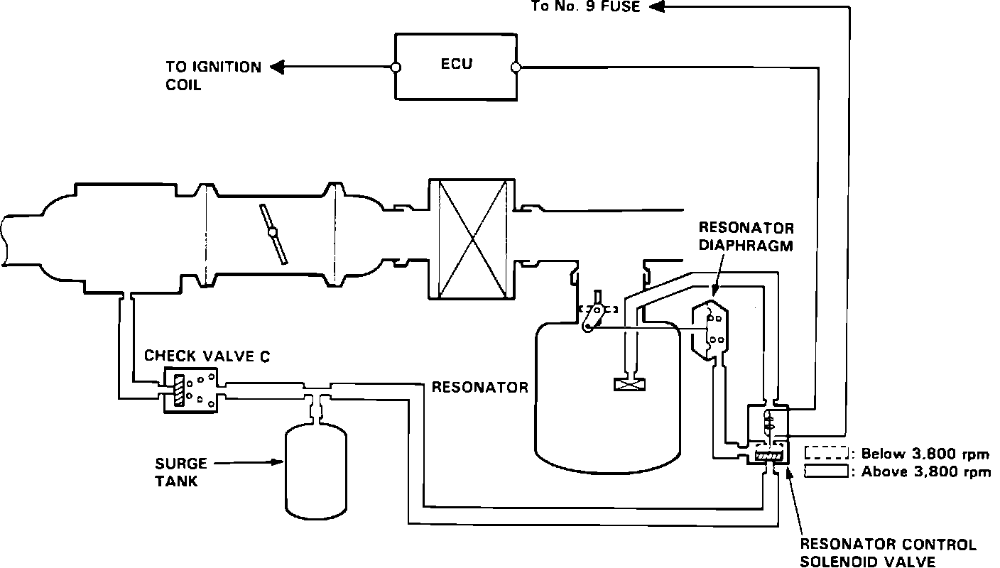

Resonator Control System
Resonator Control System:

The resonator control system is used to help lower intake noise from the engine compartment. The resonator control solenoid is powered whenever the ignition switch is turned ON, from terminal Ign. 1. When engine speed is below 3,800 rpm, the ECU grounds pin B1 which opens the solenoid. Source vacuum is routed to the solenoid through a check valve and surge tank to supply a constant vacuum source. When opened the solenoid allows vacuum to the resonator diaphragm, which opens the resonator chamber.